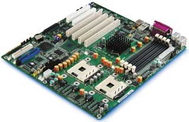
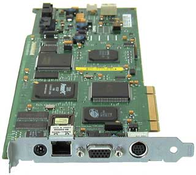

Владислав Шаров
Быстрый рост числа серверов в расширяющихся корпоративных сетях требует и экономичных решений, которые позволят вовсе исключить простои сети или сократить их до минимума. Один из способов достижения этой цели — применение эффективных средств управления сервером. Выбор инструмента управления зависит от ответа на следующие вопросы: как будет осуществляться доступ к серверу, какие функции управления при этом необходимы и насколько важно управление данным сервером.
Вообще говоря, доступ к серверу в зависимости от метода его подключения и состояния может осуществляться разными способами. В разработках различных компаний активно использовались как стандартные отраслевые решения для удаленного администрирования, так и собственные фирменные решения. Подключаться к серверу с других компьютеров можно по основному или по служебному каналу. В последнем случае подключение устанавливается по телефонной линии или путем прямого последовательного подключения. После такого подключения сетевой администратор должен будет выбрать соответствующий инструмент управления в зависимости от того, в каком состоянии находится сервер — рабочем или нерабочем.
В понятие «системное управление» обычно включаются архитектуры, протоколы, различные программы и сценарии, описывающие, что и когда нужно делать, чтобы оптимальным образом использовать систему. Это касается не только распознавания ошибок и реакции на них, но и рутинных процессов, таких, как установка нового ПО или добавление очередного пользователя. Чтобы проделать все это децентрализованно и по возможности эффективно, нужна отработанная технология для организации удаленного доступа ко всем функциям компьютера.
Протоколы определяют, как структурируются относящиеся к управлению данные и как осуществляется обмен ими. Они позволяют применять стандартизованное ПО для управления, однако не специфицируют, каким образом соответствующие данные физически добываются и обрабатываются. Это задача технологий доступа, именно они позволяют дистанционно управлять устройством и удаленно запрашивать его параметры. Принципиально это возможно за счет дополнительных аппаратных средств или ПО, которое администратор устанавливает на контролируемом устройстве. В случае сервера программные технологии используют коммуникационные интерфейсы контролируемого устройства.
Разработчики серверных систем, стараясь сделать свои продукты более привлекательными, уделяют много внимания вопросу их отказоустойчивости. Среди нескольких факторов, играющих роль в обеспечении жизнеспособности серверов, управляемость считается едва ли не важнейшим. Поскольку задача обеспечения надежной работы серверов в основном ложится на плечи системных администраторов, развитая система управления может существенно облегчить им жизнь, и на этот момент стоит обратить внимание при выборе сервера.
Понятие управления серверами подразумевает несколько интересных и важных функций. Вкратце они сводятся к следующим:
- мониторинг работы узлов сервера, благодаря чему всегда доступна информация о его текущем состоянии;
- оповещение системного администратора о произошедших событиях, угрожающих работоспособности сервера;
- сохранение информации о работе серверных подсистем в журналах с тем, чтобы впоследствии облегчить диагностику и профилактику отказов оборудования;
- возможность удаленного доступа к конфигурационным настройкам сервера и их изменения, а также вмешательства в работу сервера с целью восстановления его штатной функциональности;
- наличие процедур самовосстановления сервера после отказов.
Проблема управления серверами чисто технически может решаться по-разному. Один из наиболее популярных способов — специальная плата расширения, дополнительно устанавливаемая в сервер. Средства управления сервером могут также изначально встраиваться в системные платы. Для этой цели используются сотни различных компонентов, управляемых специальным контроллером. По сути, все вместе представляет собой небольшой компьютер с собственной памятью, процессором, шинами и даже с отдельным питанием. Так, на серверных системных платах корпорации Intel (http://www.intel.com) для этих целей устанавливается контроллер Baseboard Management Controller (BMC).
Эволюция встраиваемых средств управления
Сервер по сложности намного превосходит обычный компьютер и состоит из большего числа компонентов. Поскольку надежность компонентов не может быть абсолютной, то и надежность всей системы в целом тоже не достигает 100% — чем сложнее система, тем более вероятны ее отказы или сбои. Чтобы избежать их или хотя бы предсказать, необходима мощная система контроля за рабочими параметрами сервера. Сюда входят температурные показатели процессоров, системной платы и жестких дисков, питающие напряжения, скорости вращения вентиляторов и т. п. Помимо основных параметров, необходимо контролировать состояние датчиков открывания корпуса; установку или вынимание дисков и блоков питания (если присутствует функция их горячей замены); наличие ошибок памяти; возникновение ошибок на шине PCI; сам факт включения или выключения сервера, а также зависание ОС. Для подобной работы и предназначается специализированный контроллер управления. Проследим развитие встраиваемых средств управления на примере серверных платформ Intel.
Вначале вся управляемость серверных платформ корпорации ограничивалась возможностью измерения напряжений и температур в ряде мест, а также блокирования кнопок питания и сброса и отключения мыши и клавиатуры до ввода пароля на аппаратном уровне. Функции контроллера выполняла отдельная микросхема INCA (INterrupt Control ASIC), выступавшая по совместительству как контроллер прерываний. Кнопки питания и сброса обслуживал отдельный контроллер лицевой панели FPC (Front Panel Controller). Для связи между INCA и FPC служила шина I2C (Inter-Integrated Circuit), простая в проектировании и реализации, поскольку она использовала всего два провода для передачи данных. Для этой шины уже тогда существовало множество микросхем периферии — таймеров, АЦП, ЦАП, регистров, мультиплексоров и т. п., что существенно понижало стоимость систем.
После того, как на платах стали устанавливать контроллер I2C (Philips PCF8584), сама шина I2C стала называться диагностической. Она выполняла различные сервисные функции, такие, как определение версии системной платы, контроль за выходом из строя вентиляторов, чтение состояния перемычек, задающих частоту шины процессора и коэффициент умножения ядра, тип платы памяти и скорость памяти по банкам и т. п.
В 1997 г. в платформе Buckeye впервые была применена идеология BMC. Контроллер BMC был изготовлен на основе процессора Philips 87C552 и представлял собой полноценный микрокомпьютер с собственной ОС. Он начинал работать сразу, как только на системной плате появлялось напряжение. Без ведома BMC не происходило ничего: он контролировал нажатие кнопок, извлечение процессорного модуля, работу вентиляторов, температуру и т. п., используя для этого стандартные микросхемы на шине I2C. В помощь BMC применялись контроллер лицевой панели FPC, ведавший кнопками включения питания и сброса, и контроллер процессорного модуля PBC (Processor Board Controller). Доступ к BMC осуществлялся через распределенный интегрированный контроллер управления сервером DISMIC (Distributed Integrated Server Management Interface Chip). Он обрабатывал важные прерывания (NMI, SMI), позволяя программам управления реагировать на них.
Следующий важный этап был связан с платформой Nightshade. На этом этапе BMC уже базировался на контроллере Dallas 80Cx10, созданном специально для выполнения функций управления. В нем было несколько независимых шин I2C и предусматривалась интеграция с шиной ISA, что позволило применять контроллер как DISMIC. На микросхеме стало больше портов ввода-вывода и АЦП, так что можно было измерять и контролировать напряжение в большем числе мест. Теперь один контроллер выполнял функции BMC, FPC, PBC и DISMIC. Возросшая гибкость и аппаратная мощь BMC (больший объем памяти, более высокая частота работы микроконтроллера) позволили развивать протокол управления платформой.
Еще одним важным новшеством в Nightshade стал так называемый порт аварийного управления EMP (Emergency Management Port), позволяющий установить связь с BMC при помощи внешнего модема или нуль-модемного соединения. После установления связи появлялась возможность включать и выключать питание сервера, просматривать список событий системы SEL (System Event Log), список сенсоров SDR (Sensor Data Records), список оборудования FRU (Field Replacement Units) и перехватывать текстовую консоль.
Упоминание о внешней интеллектуальной шине управления XIMB (eXternal Intelligent Management Bus) появилось впервые в платформе Aspen. В дальнейшем Intel совместно с HP, NEC и Dell разработала интеллектуальную шину управления платформой IPMB (Intelligent Platform Management Bus) и интеллектуальную шину управления шасси ICMB (Intelligent Chassis Management Bus).
Вскоре в серверных платформах стали использоваться новые микросхемы на базе технологии StrongArm. Теперь в BMC можно было интегрировать все функции, включая мост IPMB-ICMB. Сам BMC стал поддерживать новую версию протокола IPMI 1.5 (Intelligent Platform Management Interface). Если в предыдущей версии (IPMI 1.0) внешняя связь между устройствами была возможна только при использовании ICMB (или Serial EMP), то теперь добавилась связь через локальную сеть Ethernet. Это обеспечивает полный мониторинг системы независимо от типа установленной на сервере ОС, а также от состояния самого сервера.
|  | Современная серверная плата с BMC.
|
Все события, происходящие с компонентами сервера, как штатные (пуск, останов), так и выходящие за рамки нормальной работы, фиксируются в системном журнале, или SEL (System Event Log). Доступ к его содержимому можно получить даже при неработающем сервере, если работает BMC, что помогает определить причины неполадок в работе сервера. Очевидно, что чем раньше информация о сбоях достигнет администратора, тем эффективнее будут его действия по предотвращению остановки сервера.
Еще одна полезная процедура — LAN Alerting. В случае возникновения заранее определенных критических событий, записываемых в SEL, извещение о них посылается по сети системному администратору. Для серверов, установленных в стойку, очень полезна может оказаться функция Serial over LAN, позволяющая эмулировать консоль управления серверами в обычной сети. Благодаря ей не приходится создавать еще одно подключение к серверам по последовательному порту для управления, что может сэкономить много сил и времени администратору, если число обслуживаемых серверов велико.
Как работает BMCВсе BMC представляют собой самостоятельный компьютер, только предназначенный для довольно узкого круга задач. Этот компьютер постоянно опрашивает датчики и следит за функционированием других интеллектуальных устройств, подобных ему самому. Он также способен сам отвечать на запросы любого такого интеллектуального устройства. В спецификации IPMI все датчики и устройства, доступные BMC, называются сенсорами. Отметим, что в системные платы встроено множество разнообразных счетчиков и датчиков, отслеживающих работу всех компонентов сервера. Число оборотов вентиляторов охлаждения, напряжение блоков питания, ошибки работы памяти сервера, температура самой платы и процессоров — вот неполный перечень параметров, которые контролирует специальное ПО. Их список, называемый SDR (Sensor Data Records), хранится в специальной энергонезависимой памяти. Каждый сенсор представлен своей записью, которая определяет, каким образом интерпретировать его значения, нужно ли реагировать на выход значения за пределы допустимых параметров (эти значения здесь же и указываются). Запрограммирована и формула, с помощью которой можно перевести показания сенсора (обычно восьмибитное значение) в общепринятые единицы — градусы, вольты, обороты в минуту и т. д.
Как правило, сенсоры опрашивают по кругу, через заданный интервал времени. Их значения сравниваются с допустимыми, и в случае отклонений BMC может послать системе уведомление о событии и занести его в энергонезависимую память для последующего анализа. |
Протокол IPMI
Протокол IPMI (Intelligent Platform Management Interface) описывает универсальный интерфейс связи с интеллектуальным оборудованием, который используется для контроля таких физических параметров состояния серверов и их компонентов, как температура, напряжение питания, скорость вращения вентиляторов, а также для наблюдения за работой блоков питания и доступом внутрь корпуса. Полученная информация помогает управлять системой и поддерживать ее работоспособность, а также вести учет материальных ресурсов. Все это не только повышает эффективность учета системных ресурсов, но и снижает совокупную стоимость владения системой.
IPMI, изначально создававшийся как интеллектуальный протокол для объединения всех компонентов серверной инфраструктуры локальной сети, активно продвигается в качестве единого стандарта управления не только для серверов, но и для графических и рабочих станций, внешних дисковых массивов и других систем. Например, реализация IPMI позволяет применять для управления всей сетевой инфраструктурой ПО Intel Server Management, благодаря чему сокращаются затраты на администрирование и увеличивается надежность всей информационной системы за счет заблаговременного устранения потенциальных сбоев.
Первая версия стандарта была предложена Intel, HP, NEC и Dell в 1998 г. и впоследствии использовалась более чем 70 компаниями. Кроме того, Agilent Technologies, QLogic, National Semiconductor, Vitesse Semiconductor и Winbond Electronics разработали специальные платы и контроллеры для управления периферийными устройствами посредством IPMI. Производители включали в комплект своих поставок инструментальные средства (SDK) для разработки встроенных микропрограмм и ПО для поддержки IPMI. Заметим, что ОС IBM AIX и HP-UX содержат встроенные средства поддержки сообщений IPMI.
Весной 2001 г. была выпущена спецификация интерфейса IPMI 1.5, которая предусматривала возможность удаленного управления установленными в стойки Интернет-серверами и системами через последовательный порт, при помощи модема или по локальной сети. В IPMI 1.5 включены новые средства автоматического уведомления о сбоях и немедленного восстановления работоспособности. Все эти новшества в сочетании с функциями удаленного управления позволяли ИТ-персоналу управлять серверами и системами независимо от того, исправны они или нет, каково состояние электропитания и какого типа связь используется.
Протокол IPMI 1.5 был обратно совместим с версией 1.0 и содержал дополнения, поддерживающие уже существующие и ожидаемые стандарты, — Desktop Management Task Force Alert Standard Forum, CompactPCI, SMBus 2.0.
В ходе весеннего Форума Intel для разработчиков в 2004 г. Intel, Dell, HP и NEC объявили о выходе второй версии спецификации интерфейса интеллектуального управления платформами IPMI 2.0, которая расширяет возможности управления серверами и позволяет сократить расходы. В частности, IPMI экономит пользователям время, помогает максимально эффективно использовать ресурсы ИТ-отдела и обеспечивает единое управление многоплатформенными средами, сокращая общие расходы на управление серверами. Используемая сегодня спецификация определяет общие интерфейсы, которые дают ИТ-менеджерам возможность получать информацию о состоянии системы, отправлять команды на соответствующие стандарту серверы и проводить удаленную диагностику через сеть.
Спецификация IPMI 2.0 не только расширяет возможности ИТ-персонала, но и повышает качество удаленного управления за счет введения расширенных функций безопасности, удаленного доступа и новых возможностей настройки конфигурации, сохраняя при этом совместимость с предыдущими версиями спецификации IPMI. Интерфейс IPMI нового поколения обеспечивает и более экономичное внедрение, за счет чего увеличивается гибкость и сокращается стоимость развертывания серверов. В число дополнительных возможностей новой спецификации входят:
- новые алгоритмы аутентификации и шифрования — расширяют функции безопасности при удаленном управлении;
- функция Serial Over LAN — поддерживает удаленное взаимодействие с приложениями, BIOS и ОС;
- системный интерфейс SMBus — интерфейс с низким числом выводов для недорогих контроллеров управления;
- встроенный межсетевой экран — поддерживает разбивку на разделы и защиту управления в серверах с высокой плотностью монтажа в модульных системах;
- IPMI Payloads — инфраструктура для Serial Over LAN и дополнительных функций переадресации для OEM-компаний;
- новые возможности входа в систему и настройки конфигурации — позволяют настроить права доступа и конфигурацию системы безопасности в соответствии с потребностями пользователя.
По мнению специалистов, эта технология упростит управление сложными серверными инфраструктурами благодаря стандартизации инструментов и процессов. Как следствие, удастся сократить расходы и максимально повысить эффективность использования ИТ-ресурсов, предоставив пользователям возможность создавать масштабируемые инфраструктуры и эффективно управлять ими. Так, в системах HP Integrity интерфейс IPMI служит основой системы управления ИТ-инфраструктурой предприятия, на базе которой компания HP добавляет функции, повышающие эффективность использования, защищенность и удобство технического обслуживания для клиентов, работающих в гетерогенных средах. Управляемость платформ на базе серверов с процессорами Xeon и Itanium дополнительно повысится благодаря тому, что интерфейс IPMI 2.0 обеспечивает более высокий уровень безопасности и возможность удаленного управления серверами.
Управление в разнородных серверных средахКомпании Dell, HP, IBM и Intel возглавили рабочую группу DMTF Server Management, созданную под эгидой группы Distributed Management Task Force (DMTF, http://www.dmtf.org). Кроме них, в состав новой организации вошли и некоторые члены DMTF — Sun Microsystems, Microsoft, Oracle и AMD. Ведущие производители систем решили подключиться к работе над новой спецификацией, которая призвана упростить управление в разнородных серверных средах. Главная задача группы заключается в развитии предложенной DMTF спецификации платформно-независимого управления серверами Common Information Model (CIM). Разрабатываемый стандарт должен учитывать новые форматы систем, в том числе серверы, размещаемые в стойках, модульные серверы и т. п. Дело в том, что до недавнего времени не существовало универсального способа управления разнородными серверами, а эксперты полагают, что вычислительные центры будущего обязательно станут разнородными. Программные пакеты, подобные Dell OpenManage, HP OpenView и IBM Tivoli, обеспечивают управление лишь на высшем уровне серверной инфраструктуры. С их помощью можно, например, определять, сколько серверов выделяется на решение той или иной задачи, и следить за равномерностью их нагрузки. Новая же спецификация должна предложить общий интерфейс командной строки для локального и дистанционного управления, позволяющий выполнять и другие функции — скажем, рассчитывать последовательность перезагрузки и обновления встроенных микропрограмм. Как ожидается, этот интерфейс будет отображаться на общую информационную модель CIM и содержать сценарии управления. Эксперты полагают, что подобная спецификация очень нужна крупным корпорациям, в вычислительных центрах которых используется множество разнообразных систем. Аппаратные и программные продукты с поддержкой новой спецификации могут появиться уже к концу нынешнего года. |
Средства удаленного администрирования
Корпорация HP (http://www.hp.com) одной из первых, в начале 1990-х годов, начала заниматься вопросами управления серверами и с тех пор неизменно лидирует в этой области, разрабатывая и популяризируя стандарты, которые сегодня широко применяются в компьютерной индустрии. Довольно заметны успехи корпорации в развитии средств удаленного администрирования.
Расширение бизнеса требует размещения множества серверов на объектах, разбросанных по всему миру. Но служба ИТ при этом остается централизованной и не может безгранично наращивать штат. Обслуживание серверов в распределенных вычислительных средах с выездом специалистов на место превращается в дорогостоящее удовольствие, отнимающее много времени и требующее весьма негибких процедур. Ключ к продолжительной работе без простоев — в том, чтобы иметь удобный дистанционный доступ к этим серверам. Необходимо быстрое и эффективное реагирование на события, способные приводить к простоям, и проведение диагностики еще до выезда специалиста по ремонту на место.
Совершенствование технологии удаленного доступа привело к появлению продукта Remote Insight Lights-Out Edition (RILOE). Это была новая, предназначенная для работы только через локальную сеть, версия платы Remote Insight Board/PCI, обладающая рядом улучшенных возможностей. Она упрощала и удешевляла решение задач дистанционного доступа и администрирование серверов стандартной архитектуры. Плата имела собственные интегрированные аппаратные компоненты, обеспечивающие доступ к серверу и управление им в полном объеме, независимо от текущего состояния ОС и аппаратной части самого сервера. Встроенная в ПЗУ платы RILOE поддержка удаленной графической консоли администрирования обеспечивала беспрепятственный доступ к серверу в полностью графическом режиме, не требуя установки дополнительного ПО на администрируемом сервере либо на клиентском компьютере, используемом для администрирования.
У платы RILOE был ряд привлекательных возможностей, обеспечивающих доступ и управление серверами, расположенными в центрах обработки данных или на удаленных объектах, в полном объеме. ИТ-администратор мог получить доступ к встроенной графической консоли дистанционного управления из обычного Web-браузера, а для настройки конфигурации можно было использовать утилиту Smart Start, встроенную в ПЗУ утилиту конфигурирования или специальную программу Remote Insight Board NT Configuration Utility.
В ходе нормальной работы плата RILOE получала питание стандартным образом — через разъем шины PCI. Чтобы сократить число ситуаций, в которых дистанционный доступ к плате оказывается невозможен, и повысить уровень готовности, в комплект поставки включался внешний источник питания с кабелем.
Стоит отметить, что виртуальный выключатель питания не обеспечивал завершения работы системы. Эта функция предназначалась для выключения сервера в случае зависания ОС. В тех же случаях, когда ОС сохраняет работоспособность, сервер можно корректно остановить средствами ПО администрирования Insight Manager либо запустив обычную процедуру завершения работы с графической консоли дистанционного администрирования.
Виртуальный привод гибких дисков (Virtual Floppy Drive) стал новой функцией платы RILOE. Он позволяет загрузить сервер с дискеты, вставленной в дисковод любого из подключенных к сети компьютеров. Тем самым администратор избавлен от необходимости подходить к серверу, чтобы вставить дискету в его физический дисковод.
Схема работы виртуального привода гибких дисков предусматривает создание образа дискеты и передачу его по сети в память платы RILOE, установленной на администрируемом сервере. Затем плата перенаправляет операции ввода-вывода с физического дисковода на образ дискеты в своей памяти. Поскольку память платы RILOE не зависит от сервера, загруженный в нее образ дискеты доступен и после перезагрузки или выключения питания сервера.
Плату RILOE можно также использовать для дистанционного администрирования сервера, с которым нет связи по сети, — с помощью находящегося в одной с ним сети Ethernet-шлюза модемной связи или сервера удаленного доступа, сконфигурировав соответствующее удаленное соединение.
К основным отличительным особенностям RILOE стоит отнести ведение журнала регистрации событий, ошибок и неисправностей серверной аппаратуры и ПО; удаленное управление электропитанием сервера; управление удаленным компьютером в графическом режиме; наличие виртуального гибкого диска; интерфейс на базе стандартного Web-браузера; обеспечение безопасности соединения с удаленным компьютером на базе SSL-метода; независимость от типа конкретной ОС, установленной на сервере; уменьшение числа кабелей, необходимых для работы сервера.
В дальнейшем торговая марка Remote Insight Lights-Out объединила уже целое семейство продуктов: Remote Insight Lights-Out Standard (стандартный функциональный набор); Remote Insight Lights-Out Advanced (расширенная функциональность); Remote Insight Lights-Out Blades (расширенная функциональность, дополненная учетом особенностей тонких и сверхтонких серверов, устанавливаемых в стойку в тесном пространстве коммуникационных центров). Целевым сегментом для средств RILOE нынешнего поколения стали практически все корпоративные серверы стандартной архитектуры, поддерживающие информационную систему предприятия. При разработке данного поколения продукта был сделан акцент на учет самой главной особенности современных информационных систем — их функционирования в непрерывно меняющейся информационной среде.
Плата RILOE II позволяет ИТ-администраторам существенно более экономично управлять как одним, так и тысячами серверов стандартной архитектуры HP ProLiant в рамках центра обработки данных или в удаленных подразделениях по всему миру. Новые технологии (включая усовершенствованные возможности графики и обеспечения безопасности) позволяют быстрее и эффективнее выполнять такие критические операции, как развертывание серверов, обслуживание и установка приложений, не требуя от администратора физически находиться в месте расположения сервера. За счет использования более мощного процессора плата RILOE II обеспечивает почти пятикратное повышение графической производительности для стандартного соединения Ethernet, а также предлагает более развитые по сравнению с предыдущей версией средства управления удаленной графической консолью и 128-разрядное шифрование данных в целях безопасности. Кроме того, у платы RILOE II расширены возможности работы с виртуальными носителями информации: администратор может виртуально и удаленно использовать CD- или флоппи-диски и иметь все преимущества физического присутствия и контроля за сервером, находясь в любой точке света.
|  | Плата RILOE II.
|
Плата RILOE II тесно интегрирована с комплектом ПО HP OpenView, предназначенным для управления и оптимизации бизнес-процессов посредством ИТ-инфраструктуры, передачи голоса и данных.
С точки зрения аппаратной реализации продукт Remote Insight Lights-Out сегодня выпускается в двух модификациях: в виде PCI-платы Remote Insight Lights-Out Edition и продукта Integrated Lights-Out (iLO), встроенного в системную плату сервера. В плане функциональности разница между ними не очень велика. Важно, пожалуй, лишь то, что вариант в виде отдельной платы способен работать, даже если сервер выключен из электрической розетки, а вариант с платой расширения, встроенной в системную плату, требует, чтобы сервер был включен в розетку.
Гораздо более важны различия между этими двумя продуктами, лежащие в области схемотехнических решений. С этой точки зрения Integrated Lights-Out — представитель следующего поколения систем управления. Это дополнительный элемент на системной плате, который можно рассматривать либо как очень специфический вариант платы расширения, либо как уникальную микросборку, в которой скомбинированы возможности Remote Insight Lights-Out и дополнительные расширенные функции мониторинга, предоставляемые серверным оборудованием, точнее, заказной микросхемой ASM ASIC (Advanced System Management). В частности, в число функций ASM входит наблюдение за состоянием температуры и скоростью вращения вентиляторов, а также участие в процедуре восстановления сервера после перезагрузки.
Кроме того, архитектура iLO допускает перезагрузку как встроенной процессорной подсистемы, так и самой серверной системы независимо друг от друга. Иными словами, процессорный блок iLO обеспечивает широкие возможности управления. В частности, даже при перезагрузке сервера поддерживается уже установленный доступ администратора к удаленному серверу. То же свойство iLO используется при модернизации промежуточного ПО сервера, что позволяет избежать перезагрузки сервера или иных манипуляций с ним. Возможности платы удаленного управления iLO настолько богаты, что позволяют применять в качестве удаленного сервера не только устройство без флоппи-дисковода и привода CD-ROM, но и без монитора, клавиатуры и манипулятора.
| Набор инструментов управления.
|
По мере роста плотности размещения серверов в центрах обработки данных на их администрирование начинает уходить все больше времени и средств, а используемые процедуры становятся все менее гибкими. Низкая цена платы Remote Insight Lights-Out Edition и широкий спектр ее простых в использовании функциональных возможностей (особенно важны подключение по локальной сети и встроенная поддержка графической консоли дистанционного управления) позволяют администраторам отказаться от оснащения серверов мониторами, клавиатурой и мышью (и соответственно сократить число кабелей). Для доступа к серверу, запрятанному где-то глубоко в недрах центра обработки данных, с полным набором возможностей управления достаточно подключенного к сети компьютера с Web-браузером, а администратору совершенно не обязательно находиться в помещении центра.